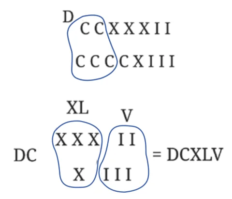

- Represent the following numbers in the Roman system.
- 1222
- 2999
- 302
- 715
We see how vastly efficient this system is compared to some of the previous number systems that we have seen. This system seems to have evolved out of the ancient Greek number system in around the 8th century BCE in Rome, and evolved over time. It spread throughout Europe with the expansion of the Roman empire.
The efficiency of this system is due to the grouping of a given number by not just one group size, but a sequence of group sizes that we call landmark numbers, and then using these landmark numbers to represent the given number. This idea is the next important breakthrough in the history of the evolution of number systems.
Despite the relative efficiency of the Roman system, it doesn’t lend itself to an easy performance of arithmetic operations, particularly multiplication and division.
Example: Try adding the following numbers without converting them to Hindu numerals:
- CCXXXII + CCCCXIII
Let us find the total number of Is, Xs, and Cs, and group them starting from the largest landmark number.
Apparently, it looks like the largest landmark number is C, but note that 5 Cs (100s) make a D (500). So the sum is

Do it yourself now:
- LXXXVII + LXXVIII
How will you multiply two numbers given in Roman numerals, without converting them to Hindu numerals? Try to find the product of the following pairs of landmark numbers: \(\text{V} \times \text{L}\), \(\text{L} \times \text{D}\), \(\text{V} \times \text{D}\), \(\text{VII} \times \text{IX}\).
People using the Roman system made use of a calculating tool called the abacus to perform their arithmetic operations. We will see what it is in a later section. However, only specially trained people used this tool for calculation.
While going through the number systems discussed above, it should not be understood that, historically, one system developed as an improvement over the previous system. This point should be kept in mind when studying the upcoming number systems too. The actual story of how each of the number systems developed is much more complex, and many times not clearly known, and so we will not try to trace this in the chapter.